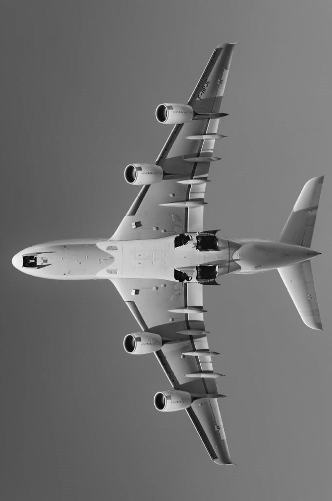
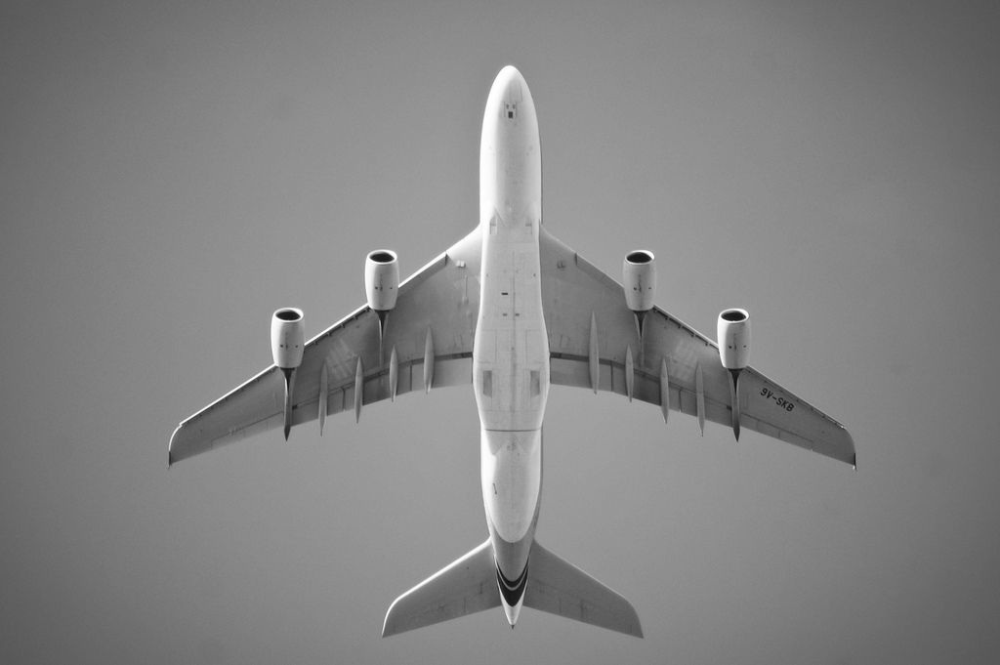

Airplanes are one of the most important inventions in modern transportation.
They allow people and goods to travel long distance in a short amount of time, connecting countries and continents across the globe.
History of Airplanes
The first successful powered flight was achived by the Wright brothers in 1903. Their aircraft, the Wright Flyer, stayed in the air for 12 seconds, marking the beginning of aviation history. Since then, airplanes have evolved from simple wooden structures into advanced machines made of lightweight metals and composite materials.
How Airplanes Work
Airplanes fly using four main forces : Lift, Thrust, Drag, and Weight. Wings are specially designed to create lift, allowing the plane to rise into the air. Engines provide Thrust to move forward, while Drag and gravity act against motion.
Importance of Airplanes
Airplanes are essential for global travel, tourism, trade, and even emergency services. They help transport medical supplies, deliver cargp, and connect people around the world quickly and efficiently.

Types of Airplanes
Commercial Airplanes Used by airlines to transport passengers (e.g., Boeing 747, Airbus A320).
Cargo Planes - Designed to carry goods and freight across countries.
Military Aircraft - Used for defense, surveillance, and combat missions.
Private Jets - Smaller aircrafts used for personal or business travel.
Modern aviation
Today's airplanes are equipped with advanced navigation systems, autopilot technology, and fuel-efficient engines. Engineers continue to develop quieter, faster, and more environmentally friendly aircraft.
Fun Facts
• The largest airplane in the world is the Antonov An-225.
• Airplanes can fly at speeds over 900 km/h.
• Pilots and co-pilots work together to ensure safe flights.
Conclusion
Air planes have revolutionized transportation and continue to play a vital role in connecting the world. From their humble beginnings to modern aviation technology, they remain one of the greatest achievements in human engineering.